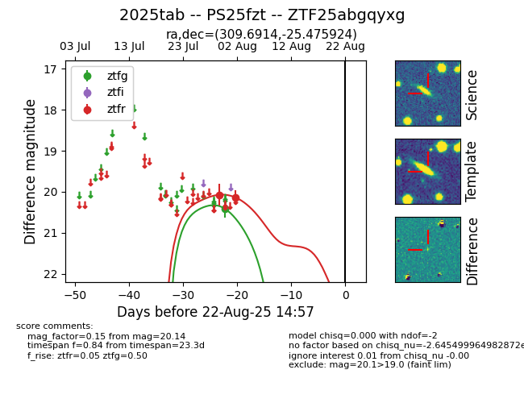

Target 2025tab at 2025-08-21 09:29, see:
FINK: fink-portal.org/ZTF25abgqyxg
Lasair: lasair-ztf.lsst.ac.uk/objects/ZTF25abgqyxg
ALeRCE: alerce.online/object/ZTF25abgqyxg
TNS: wis-tns.org/object/2025tab
YSE: ziggy.ucolick.org/yse/transient_detail/2025tab
alt names
ZTF25abgqyxg (ztf,alerce)
2025tab (tns,yse)
PS25fzt (panstarrs)
coordinates:
equatorial (ra, dec) = (309.6914,-25.47592)
galactic (l, b) = (19.1897,-33.97217)
photometry
last ztfg=20.41, ztfr=20.14
1 ztfg, 2 ztfr detections
